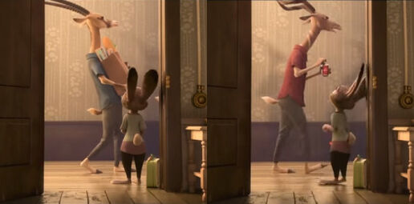
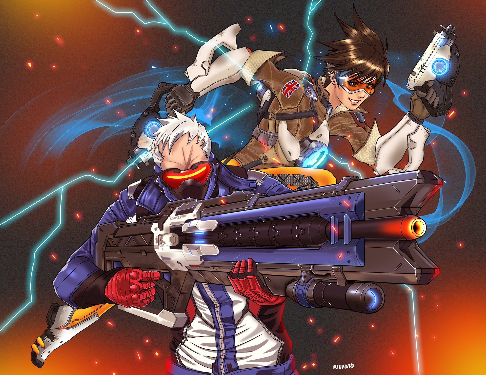
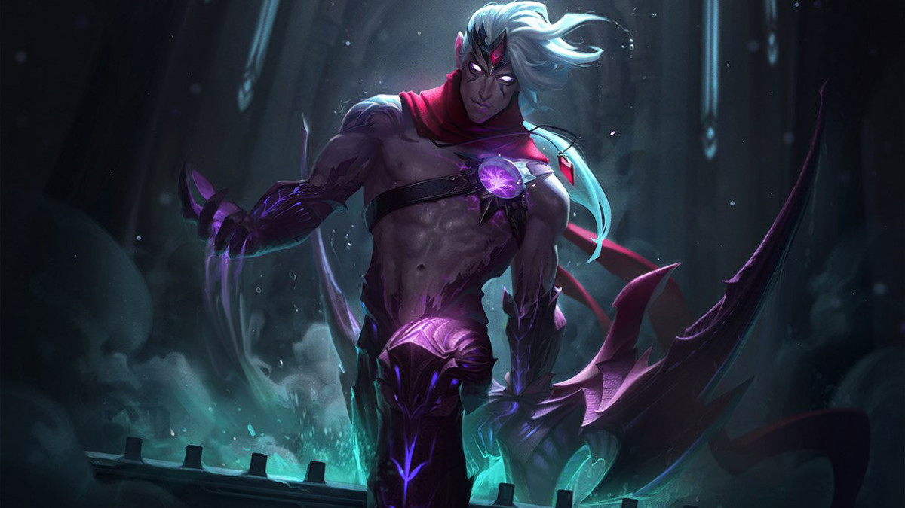
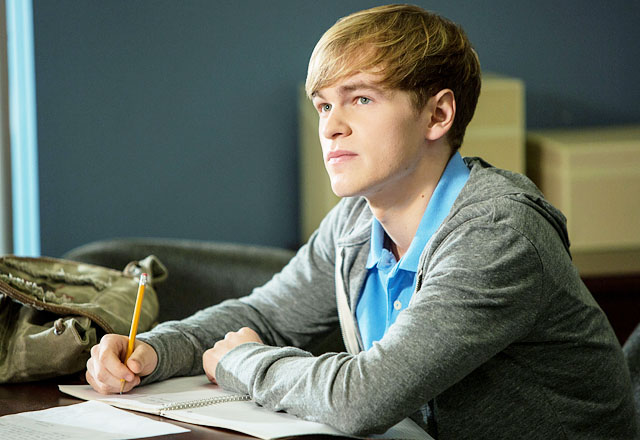
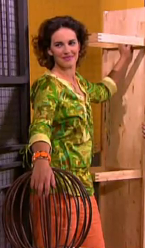
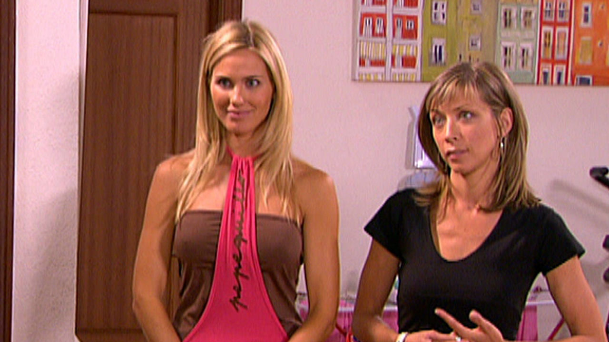
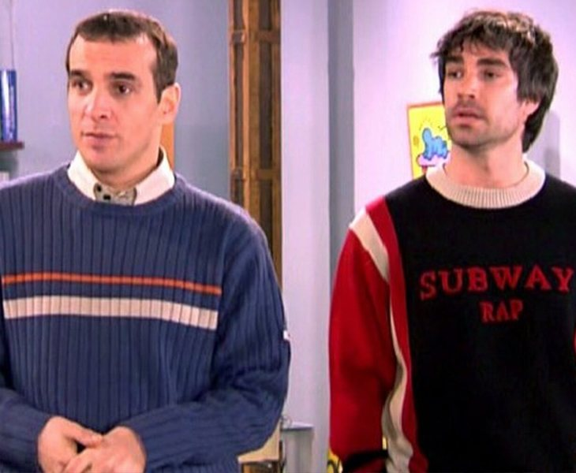

¿Lo llegasteis a notar?
Momentos importantes en series/películas/videojuegos
Seguramente no lo habréis notado, pero ha habido distintos personajes que son LGBT en las series, películas y videojuegos del día a día. He conseguido recopilar algunos personajes importantes y conocidos que hacen su aparición como personaje del espectro LGBT. Veremos si fuisteis capaces de reconocerlos.
Zootrópolis
Película conocida de Disney que consiste en una coneja que quiere ser policía, pero tendrá que pasar penurias e incluso aliarse con un zorro estafador, llamado Nick Wilde, para resolver un caso más grande de lo que esperaban. Hay cierta escena de esta película en la que aparece una pareja gay y probablemente pensabas lo contrario si la viste (si no la viste, recomiendo verla). Esos personajes son Bucky y Pronk, vecinos ruidosos de Judy cuando ella llega a Zootrópolis. En un principio, pensarías que son hermanos o amigos... pero no es así. Uno de los que le dio voz y director de la película, Jared Bush (voz de Pronk en inglés), confirmó que son una pareja casada.
Overwatch
Overwatch es un juego de estilo "shooter" creado por Blizzard. En él, cada personaje tiene sus propias habilidades, armas, voces e interacciones, jugando en mapas con increíbles vistas. No sólo se limita a eso. Este juego tiene una historia muy trabajada para dar a conocer más de los personajes y el mundo (cómo Tracer se unió a Overwatch, porqué cayó Overwatch, qué es Talon...). En dos casos, el equipo de Overwatch decidió "sacar del armario" a sus personajes. Estos fueron Tracer y Soldado 76. De Tracer se descubrió cuando hicieron un cómic de Navidad en el que, al final, su novia, llamada Emily, le dio un beso por el regalo. Soldado 76 fue descubierto cuando una amiga suya y personaje jugable, Ana Amari, le preguntó por el pasado con un hombre, de nombre Vincent. Reveló que le quería pero que es mejor que fuera feliz con otro, ya que sentía que no podía darle la vida que él quería. La aceptación fue generalizada excepto por, cómo no, Rusia, que no tradujeron los cómics y pidieron que retiraran a ambos personajes como jugables.
League of Legends
League of Legends es uno de los juegos más conocidos del mundo, ha tenido grandes competiciones, muchos seguidores y jugadores. Siendo un juego de estilo MOBA, enganchó a los usuarios por su jugabilidad exclusiva cuando apareció. Al igual que Overwatch, tiene una historia creada por cada personaje. En este caso hablamos de Varus, un campeón de rol de tirador con una historia compuesta por una pareja en su interior. Un alma es de Valmar, un asesino que intentó salvar la vida de su amado Kai cuando fueron atacados por una facción llamada Noxus. Valmar acompañó a Kai para hacer un ritual y salvarle, pero al coste de rendirse a ese "Darkin", una raza de oscuros sin remordimientos. Las almas de la pareja yacen en su interior y estarán juntas para siempre. Gran historia de amor de una pareja gay.
Major Crimes/The Closer
Major Crimes es una serie de televisión policíaca, continuación de The Closer, en la que investigaban y detenían a los criminales, viviendo sus dramas internos incluso. El caso en particular a destacar en esta serie, es un chico que aparece primero en The Closer, casi al final, para tener un mayor papel en Major Crimes. Su nombre es Rusty Beck. Le encontraron cuando huía de un enterrador envuelto en una actividad ilegal que él vio. No tiene padres y fue testigo protegido todo el tiempo hasta que la comandante Sharon Raydor decide "tenerle más cerca". El chico tuvo que prostituirse para ganarse la vida fuera del orfanato, desgraciadamente. Después de todo lo que pasó, acaba teniendo una buena vida e incluso novio, saliendo del armario en un capítulo frente a toda la LAPD, quienes le apoyan.
Aquí no hay quien viva
Mítica serie española que muchos recordarán porque dejo una huella imborrable en nuestras memorias. Fue una gran serie con humor y buenos puntos en todos los aspectos. Pero hay algo que alguno podría no saber. Podría llegar a ser considerada una serie que ayudó a la aceptación de las personas LGBT en España, ya que era mítica y comenzó en 2003, cuando aún no se aprobó el matrimonio igualitario en el país, de la mano de Zapatero, en 2004. Esta serie contenía a una mujer trans, una pareja lesbiana y una pareja gay entre otras. Resulta obvio que también había parejas heterosexuales, pero la diversidad ayudaba. Los casos concretos en dicha serie eran: La mujer trans llamada Raquel (siendo Raúl anteriormente), aparece en la quinta temporada y tiene una relación corta con Emilio, el portero. La pareja de lesbianas formada por Bea y Ana (o Inga) que vivían en el tercero B, siempre en buena relación con la pareja gay y acabaron viviendo en un chalet al final de la serie. La pareja de gays formada por Mauri y Fernando del primero B, con un Mauri con muchos celos y dudas y un Fernando más centrado. Una serie que se nos quedará en los corazones de todos.
Como se ve, los LGBT forman parte del día a día e, incluso, en videojuegos o series muy importantes, aunque no deberían ser destacados más que los demás. La finalidad de esta página era mostrar personajes de la pantalla que forman parte del LGBT y mostrar que no hay razón para discriminar a nadie, ya que todos somos válidos y todos los amores valen mucho, todo tipo de familias también.
Espero que os haya gustado y que esto expanda vuestros conocimientos en la materia.